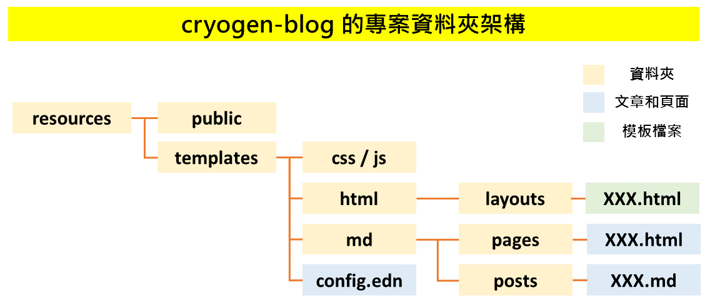

以 cryogen 搭建個人部落格
October 30, 2016
首先至 cryogen 的 GitHub repo，從 README 中的 Some Sites Made With Cryogen 中挑選一個喜歡的主題
你很快會發現許多人的樣式都很類似，那是 cryogen 的預設模板，而本部落格使用的是 on the clojure move 的模板
你可以至 on the clojure move 的 Github repo 複製一份為自己所用，或是到 我的 Github repo 複製一份中文的
我也是以該模板簡單微調，都沒有關係
clone 完整的 cryogen repo 到電腦中
git clone https://github.com/fatfingererr/cryogen-blog.git
cd cryogen-blog
lein ring server
接著打開 http://localhost:3000/ 就可以看到部落格樣板在自己電腦中運行的樣子

cryogen-blog 專案資料夾架構
我們比較常用到的是 resources 資料夾，主要是對 blog 的文章與頁面進行新增與修改
因為整個 blog 的 clojure 運作模式已大抵完成，關於 clojure 的部分我們比較少會去動到
在 resources 資料夾底下分別有兩個資料夾：
public- 靜態網頁放的地方，也是整個要作為 blog 內容上傳的資料夾templates- 所有的新增與修改都要在這個資料夾，透過lein ring server將 blog 更新至public後上傳
控制中心：config.edn
config.edn 檔案在 resources/templates/ 底下，內容為：
{:site-title "Fat Finger ERR"
:author "fatfingererr"
:description "fatfingererr blog"
:site-url "fatfingererr.github.io"
:post-root "posts"
:tag-root "tags"
:page-root "pages"
:blog-prefix ""
:rss-name "feed.xml"
:recent-posts 5
:post-date-format "yyyy-MM-dd"
:sass-src nil
:sass-dest nil
:resources ["css" "js" "images" "404.html" "README.md" "favicon.ico" "keybase.txt"]
:keep-files [".git"]
:disqus? true
:disqus-shortname "fatfingererr" }
基本上就和字面上的意思一樣，你可以根據你的需求修改，需要特別注意的是：
:post-date-format指的是你的每一篇部落格文章的標題要記得打的日期前餟的格式，打錯格式會無法轉 md 至 html:resources包含的檔案才會從templates轉到public資料夾，像我有自己的圖示favicon.ico，就要這樣子- 我在
:resources中也包含了images的原因，是因為部落格文章要用到的圖片我就用相對位址於文章中引用- 例如：
<img src="../images/cryogen-repo-struct.png" width="100%">這樣
- 例如：